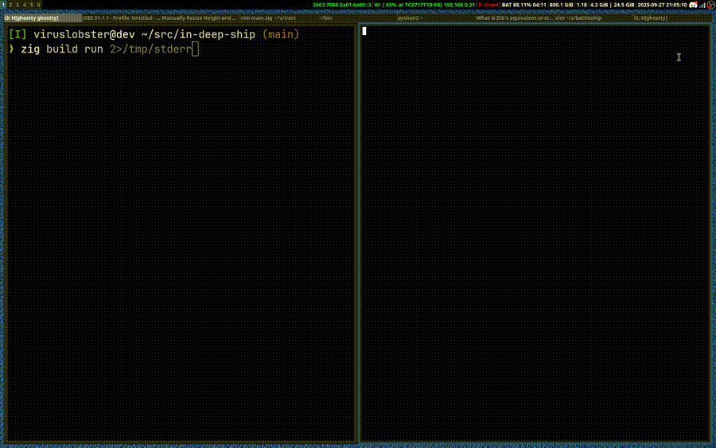

We Need a New Terminal
The terminal is a lot more than you might think. After
you type something like ls | less and hit
enter yeah the shell calls fork() and
exec(), reads stdout/stderr, and then
displays it — but that description misses the
whole platform you're using.
You'll get a better understanding thinking of the
terminal as a web browser and the forked program a
server. There is bidirectional communication going on
with its own protocol and api. For example, when you
press the down arrow your terminal sends the request
bytes
1b 5b 42
or
ESC [ B
and in this case less will respond by
scrolling the view. In the opposite direction, the
forked program can make a request like
, which asks the terminal to send mouse events as they
happen in a similiar format.
These are "control sequences"; they are the apis available to terminal applications. These apis let you query terminal dimensions, move the cursor to any cell on the screen, set the "scrolling region" (think of a spreadsheet with sticky column headers), copy and paste rectangles, set OS window properties, and even draw images (see awrit a terminal web browser).
Platforms
For years I thought of the terminal as just the way to interact with programs if you aren't building a GUI, but the reality is the terminal is a platform for building GUIs.
 ^ A random example from a project I'm working on, running a battleship simulator in a termnal on the left and it's log on the right. TODO: swap out for version with images once thats ready.The terminal just makes a different set of trade-offs than the web. In contrast, terminal apps are easier to write, more composable, flexible, and powerful. The terminal is a application platform for developers.
Just take a look at a command like this:
$ my-cli --all-jobs | tee -p /tmp/out | head -n10
Suppose my-cli is some tool for querying
service deployments or something like that. The first 10
lines will be shown but all the output will be available
in /tmp/out.
Now imagine instead of building
my-cli to interact with our jobs we built a
webapp. This feature, optionally streaming output to a
file with a configurably sized preview, might take an
engineering team months to implement! How will the
preview look? How does selecting a file fit into the
existing UI? What protocol will be used for streaming?
Is the server going to be able to support it without a
giant refactor? How will you send a preview of the data
to the GUI while streaming everything to a file?
That's so many more problems to solve! Why do we do this to ourselves? At least in my experience working in big tech, developers waste time building web based tools for each other. All the design trade-offs terminals make perfectly suite developer tools, why aren't we leveraging this more?
Not enough modern features
TL;DR its because it feels old. The web feels modern. Even the most modern Terminal Emulators lag behind current development environment standards.
Its text editor, but a bad one
If you think about it, the terminal is a text editor focused on conveniently writing and running one line scripts. However, it delegates the work of being a text editor to the shell its connected too!
This made sense back in the day, but in a desktop environment it seems a little silly. Bash is a horrible text editor: multi-line editing sucks, background processes can spew text into your input buffer, and there's no support for highlighting, formatting, or LSPs. And worst of all, for remote connections your keystrokes are at the mercy of your ping. I want to be able to write out a thought and then submit it while on a train from NYC to DC.
To be fair, the situation is a little better in modern shells, but they will never be able to compete with the experience of a dedicated text editor. Terminals should also be fully fledged text editors.
I need like 11 of them
I usually find myself opening a terminal for each thing I'm doing: one for vcs, one for building/running each binary relevant to the project, one for editing configs, one for building/canarying configs, one for the db, one for running that backfill, and so on.
The ergonomics of all wrangling all these terminals is awful. Plus, every time I open a new window I have to re-setup what should be shared context (ssh, cd $dir). This is what terminal mulitplexers were created to solve, but terminal multiplexers are a bad idea . Terminals should just support "multiplexing" features.
Shell history isn't enough
When I'm sitting down and opening my 11 terminals every morning, I'm sorta building a temporary UI. Each day its a little bit different but it usually follows one of a couple different workflows, like building a feature for a service or debugging an issue. Why do I have to rebuild UIs for these workflows every day? Why can't I save them for later or even share them with teammates?
Lack of GUI primitives
Speaking of UI's, the only way to build one in the
terminal seems to be to depend on some huge library. No
one wants that. Look at golang's
go tool pprof or the fish shell's
fish_config. Both are cli tools that launch
a web server just so they can draw you a UI. Neither of
these UIs are anything fancy, just some text, some
rectangles, and a few buttons. Terminal should support
this kinda thing, out-of-the-box, no problem.
Also think of all the LLM chatbots that support rendering markdown. Our terminals should be able to do that too.
Don't go crazy with this, we don't want browser level complexity. Trade off stylability for simplicity and utility. Just like five elements that you can print and then listen for updates to over stdin would be enough. See DECKER below.
A Prototype
So what should terminals look like? Sometimes the best design doc is a prototype. This is a neovim plugin I wrote in Lua called justtxt .
This is what I've been using whenever I have something
complicated to do in the terminal. Above I've contrived
an example where I've got to query some table for
requests made after a certain time, do some parsing on
the ids, and then test the result of running
validator on them (presumably after
changing it).
justtxt exposes the command JustTxtRun that I've bound
to a key. JustTxtRun will look at your cursor position
and buffer, select either the current line or the
current block (between two special comments), write that
to a temp file, run it, and stream the output back into
the buffer. It also supports a special comment
#!! $whatever-shell-commands-here that
lets you specify how the file gets run. Basically
!! just gets replaced by the name of the
temp file. In the video I use this to save the full
output to a file and show a preview in the buffer.
I like the UX of this a lot. I can fit all my work in one buffer so I don't have to flip between windows. I can edit everything with vim. I can easily re-run things and fix mistakes without building up a long confusing shell history. I can save everything to a file and repeat this workflow later.
Its far from perfect though. I think being a neovim plugin significantly limits the UX ceiling. Commands are not run connected to a terminal, which means some things just don't work. Fixing this would be akin to implementing a terminal multiplexer, which I've already said is a bad idea . Command output is included in your history, which basically means you can't use undo/redo. It's difficult/impossible to get neovim to syntax highlight and attach LSPs for different languages in the same buffer. At 2:08 in the video I have to open a separate buffer to remove the column headers from one of my outputs. I wish I could just edit the output in my current buffer. Also, its pretty much out of the question to build any GUI primitives into this.
A Vision
Finally, the moment you've been waiting for. I'll try to put into the fewest possible words what a modern terminal should be like.-
Its built from the ground up, for maximum flexibility and performance. No web tech.
-
Its a backwards-compatible superset of a regular terminal. You can ignore all the extra stuff and rely on muscle memory.
-
The buffer where you write commands is a fully fledged text editor.
-
Any text can be run as code in any language.
-
Running programs have a "regular" terminal that is embeded inline with the text. This doesn't disrupt the "normal" text environment. You can navigate the cursor through the terminal, code, and unrelated text like normal.
-
You can run many commands and have many terminals running simultaneously in the same buffer.
-
After a program exits its stdout/stderr is available inline as open files. Output retains rich properties (color, style, background images). Rerunning erases the old output.
-
Its easy to pipe the output of one program into another.
-
Programs can write GUI components to stdout and then listen for interactions over stdin. You can quickly implement simple GUIs like a form or a timeseries viewer without requiring a huge graphics library.
-
Almost nothing about the experience changes if you're connected to a remote machine.
-
The tool is ai friendly. Interacting with an llm is just "running" some text with
#!llm.
Who knows when I'll have time to build something like this or if anyone else will have the motivation. At the very least writing my ideas out like this has made them more concrete.
Addendum: Existing Tools
Here are some cool exiting tools for more inspiration. None of them are close enough to the tool I want, but they all have elements of it.
ACME
I first heard of ACME several years ago through this video . Its what made me realize the current interaction model that all terminals use isn't the only way to do things. They way the entire editor is runnable, how you can pipe anything in the editor through a command, how everything integrates together yet is so loosely coupled, is really inspiring. Its whole approach is 100% spot on. However, you can hardly call ACME modern. It was written for Plan 9, the never-to-be successor to linux. It leans hard into using the mouse and has no modal editing at all.
Modern Terminals
Modern terminals like Kitty do solve some of the problems I mention. Kitty was the first to support the Kitty graphics protocol, which lets you draw images almost as easily as just printing the bytes. Kitty also has an ssh integration called Truly convenient SSH which automatically reuses the ssh connections (among other things). Another terminal, Alacrity, supports a vi mode that lets you temporarily treat the scrollback buffer as a vim buffer, thats definitely nice.
Warp Terminal
Warp is another modern Terminal, but is trying to innovate and take things in a new direction. I quite dislike the end result: it feels like an over cluttered freemium web app, it's leaning too hard into AI, it encourages you to sign in, and its closed source.
However, it does have some good ideas. As far as I can tell, it is handling text editing itself instead of delegating it to a shell. Its aware of what is a command and what is output and groups the interface into "blocks". It also has built in support for "workflows" and "notebooks" that allow you to build executable runbooks or documentation for single commands. Unfortunately, last time I checked these features are effectively paywalled.
Modern shells (zsh, fish)
Modern shells like zsh and fish, and even modern bash, have some nice quality of life improvements. In all of these you can enable vi-mode and write commands with vim like keybindings or trigger the current input to be opened with $EDITOR. In fish you can write multiline commands with shift-enter. I extensively use substring history search in both bash and fish.
DECKER
This thing is actually pretty cool. Love the aesthetic too. Its a tool for creating interactive multimedia documents. It runs as a native app using SDL or in the browser, try it out below. I think this is a great example of exposing a simple set of GUI elements that allow users to quickly compose UIs.
Jupyter Notebooks
Python notebook are obviously an inspiration for my vim plugin. Love the idea, but it can't just be for Python and it can't just be in the browser.
Emacs
I feel like Emacs is an obligatory mention here since ideologically it does set out to solve most of what I ask for. I have never used emacs though. Vim's modal editing is just much better.